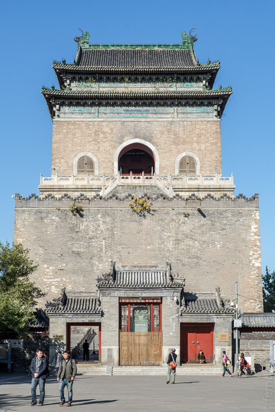

30/10/2017
Peking
Gegen die Schlange beim Einreiseschalter und den Morgenverkehr in die Stadt hinein, wirkte der Flug nach Peking geradezu kurz. Die Stadtautobahn lässt schon die Ausmaße erahnen, mit denen man in Peking rechnen muss. Die quadratische 2. „Ringstraße“ gibt Blicke auf zwei gigantische Achsen frei, die bis zum Horizont von Hochhäusern gesäumt sind. Wir fuhren von der Hochtrasse ab und waren immer noch auf achtspurigen Straßen, die im Stadtplan schon wie Nebenstraßen aussahen. Der Stadtkern ist so groß, dass man gar nicht erst an Laufen denken sollte. Die Straßen sind kilometerlang.
In den Hutongs, den alten Vierteln mitten im Zentrum, wird es dann klein und eng. Die Häuser sind alle flach und mit dunkelgrauen Betonziegeln gebaut, die Mauern mit gewellten Dachziegeln abgeschlossen, was traditionell und schick wirkt.
Die wuseligen Gassen sind teilweise zu klein für Autos. Aber nichts kann die allgegenwärtigen Fahrräder und Roller aufhalten. Was Elektromobilität angeht, ist Peking weit vorn. Die allermeisten Roller fahren mit Strom und sausen so leise, dass sie ständig Hupen müssen, um Unfälle zu vermeiden. Hier scheint fast alles, was zwei oder drei Räder hat, mit einem Elektromotor aufgerüstet zu werden. Vielleicht einer der Gründe, dass wir vom berüchtigten Smok nichts mitbekommen haben?
Unser Hotel The Orchid ist ein kleines Juwel, das sich am Ende einer schulterbreiten Gasse in einem Hinterhof verbirgt. Die alten Gebäude wurden liebevoll renoviert und um Annehmlichkeiten wie Toiletten bereichert. Das ist in den Hutongs keine Selbstverständlichkeit. Die meisten Bewohner benutzen die öffentlichen Toiletten und Duschen, die es an jeder zweiten Ecke gibt. Wir mussten unser Haus zum Waschen nicht verlassen.
Aber viel Gebrauch haben wir von unserem schönen Zimmerchen nicht gemacht. Dafür gibt es in Peking zu viel zu sehen. Die Metro ist ziemlich modern und funktioniert sehr einfach. Die Automaten lassen sich auf Englisch umschalten und man wählt einfach den Zielort. Beim Umsteigen muss man allerdings einen nicht unbeträchtlichen Teil der Strecke zu Fuß zurücklegen.

Der Himmelstempel war unser erstes Ziel. Das Attribut „weitläufig“ gilt für fast alles in Peking - so auch hier. In einem schönen Park liegen einige berühmte Tempel. Der größte davon thront auf drei runden Terrassen wie auf einer großen Torte. Leider kann man nicht hinein, doch ein Blick durch die große Pforte offenbart eine wunderbare Dachkonstruktion aus gewaltigen, bunt verzierten Balken. An den Wandelgängen treffen sich die Alten und zocken in der Herbstsonne Karten.
Den Rest des Tages verbringen wir rund um unseren Hutong, wo die eindrucksvollen Trommel- und Glockentürme stehen. Obwohl die Gegend einfach und traditionell aussieht, verstecken sich immer wieder hübsche Cafés und Restaurants in den Höfen. Und es ist überraschend sauber. Nicht nur der Himmel ist strahlend blau, es gibt so gut wie keinen Müll auf der Straße.
